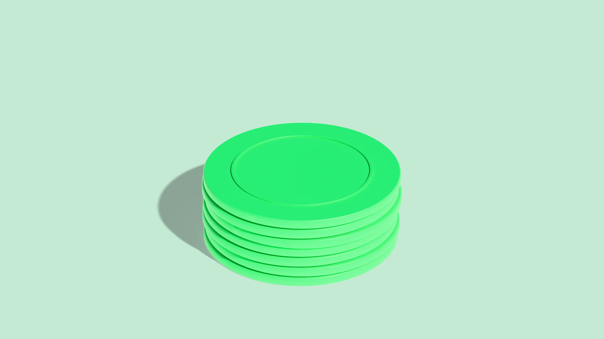

What it checks
Duplicate payments, duplicate bills, overpayments, unused vendor credits, and payments that don’t match what was billed. Every result comes with the records that show it.
The same invoice paid twice: by check and ACH, on a card and as a bill.
A bill entered twice is one approval away from being paid twice.
Payments above the invoice, deposits paid again, estimates paid instead of the final bill.
Returns, rebates, and price corrections come back to you as credits.
A transposed digit, the wrong invoice, a payee that doesn’t match the bill.
01 · Duplicate payments
The same invoice paid twice: by check and ACH, on a card and as a bill, or in a payment run that went out again. Reclaim finds each one, with the records that show it.
Reclaim compares each payment with the bills and payments around it: vendor, amount, invoice number, reference, and date. Here are examples of what it turns up.

Yes. $2,640 by ACH on Mar 3, then by check on Mar 11.
3 invoices, $9,315 in total, all from two vendors.
Yes. $4,800 on the company card, then again by ACH six days later.
Yes. Invoice 7719 came back as 7719-A and was paid again: $1,150.
Yes. The office supplier exists with and without "Inc." Two invoices were paid under both.
Not a duplicate. The second matches a separate invoice for the deposit.
Yes. Check #20417 cleared, and so did its replacement, #20455: $3,210.
1 match: $18,000 to the equipment lessor, sent both ways on May 30.
4 pairs. 3 are duplicates. 1 matches two separate invoices.
2 bills, $1,940 in total, each paid once from AP and once on a card.
Yes, in January: autopay on the 12th, a manual payment on the 14th. $1,318.
1 contractor, week of Jun 9: two payments of $2,400.
Yes. Paid upfront on Feb 2, then again from the invoice: $7,450.
2 payments from the last week of December, $6,020, repeated in January.
Yes. "INV 5521" and "5521" were paid three weeks apart: $980.
Yes. The insurance premium, paid from both operating accounts: $12,400.
Yes. The Apr 28 run went out again on Apr 29: 6 vendors, $14,230.
11 of them, $640 in total, from the same 2 vendors.
No. One payment per invoice in all three months.
Not a duplicate. They match two invoices, #0611 and #0625.
Yes. The May statement was paid on the 20th and again on the 27th: $3,775.
14 duplicates, $61,480, across 9 vendors, each with its records.
02 · Duplicate bills
A bill entered twice is one approval away from being paid twice. Reclaim finds repeats by number, vendor, amount, and date, even when a typo or a renamed vendor hides them.
Reclaim compares every bill with the other bills from the same vendor, allowing for typos, extra zeros, and renamed vendors. Here are examples of what it turns up.
Yes. Once on Feb 4 and again on Feb 18, both approved: $5,120.
Yes. The reminder copy of #8812 became a second bill for $760.
Yes. Same vendor, date, and amount, entered as two bills.
3 pairs, like INV-2291 and INV-2219. 2 are repeats: $4,430.
Yes. The March statement line for #6120 became a new $1,875 bill.
5 bills. 3 look like repeats of each other: $2,190.
Yes, for the printing vendor: $3,460, entered 9 days apart.
4 open bills, $7,905, match invoices that were already paid.
Yes. Invoice date on one, due date on the other: $1,340.
2 bills, entered by different team members on the same day: $2,980.
Not a repeat. Same amount, but for May and June service.
Yes. #5504 and #5504-R are both open. Only the revised $3,050 is due.
Yes. The software license, $9,600, came in through both.
6 bills, $2,215, entered both ways.
Yes. The same file, uploaded Tuesday and Thursday: $890.
No. One bill, matched to one invoice number.
2 pairs: $1,249.99 and $1,250.00 for the same order.
Yes. PO 3381, line 2, was billed twice: $4,700.
Yes. The electrician is set up twice, and invoice 12-044 sits under both.
3 bills, $5,560, all entered in the last week of December.
7 purchases, $3,120, already on the card statement.
9 bills, $16,340, each shown next to the bill it repeats.
03 · Overpayments
Payments above the invoice, deposits paid again, estimates paid instead of the final bill. Reclaim finds where more went out than was owed, with the bill and payment side by side.
Reclaim adds up what was billed and what was paid for each invoice, including deposits, fees, and split payments. Here are examples of what it turns up.
6 payments, $4,915 over in total. The largest was $1,200 over.
Yes. $1,000 deposit, then the full $5,600 invoice paid anyway.
Yes. $1,640 over, on the April packaging order.
Yes. Once on the product invoice and again on the freight bill: $285.
Yes. Three payments on #2208 came to $6,450 against a $5,900 bill.
Yes. A $75 fee on #4410, which was paid 3 days before it was due.
Yes. Invoices dropped to $2,000 in March. Payments stayed at $2,500.
No. $12,480 billed, $12,480 paid.
3 payments, $2,640. Two went to a vendor whose last invoice was in March.
7 payments to the same contractor, $412 over in total.
Yes. A $2,400 annual plan, plus 4 monthly charges of $240.
Yes. Reduced to $3,300 after a short shipment. $3,800 was paid.
Yes. Invoiced for 32 hours, paid for 40: $760 over.
23 payments, $512 in total, mostly to 2 utilities.
No. The payment also covers a separate $180 invoice from that week.
Yes. The 3% fee was added twice on #1566: $138 over.
Yes. The $9,500 estimate was paid. The final invoice was $8,740.
Yes. $450 of a $3,600 bill was credited, and the full $3,600 was paid.
5 payments, $2,310 over, to 3 new vendors.
4 vendors. Payments exceed bills by $6,275 in total.
Yes. Invoices moved to $12.80 a unit in May. Payments stayed at $14.20.
$11,860 across 19 payments, each with its bill and payment.
04 · Unused credits
Returns, rebates, and price corrections come back to you as credits. Reclaim finds the ones still sitting open while invoices from the same vendor were paid in full anyway.
Reclaim tracks credit memos and returns against the bills paid after them, so an open credit doesn't go unnoticed. Once it can read supplier statements, it also finds credits your vendor shows that your books never recorded. Here are examples of what it turns up.
5 credits, $3,480, still open with 4 vendors.
Yes. A $1,260 credit for returned chairs, open since February.
Yes. The paper supplier's statement shows $640 in your favor.
3 credits, $2,115. The oldest is 19 months old.
Yes. An $850 credit was open when #3304 was paid in full: $4,200.
2 vendors, $1,730 in open credits, no bills in 8 months.
Yes. A $2,000 rebate credit from the distributor, never applied.
4 credits, $920, issued after a pricing error in May.
No. The $415 credit for damaged boxes is still open.
No. It was applied to invoice #5518 in April.
6 negative bills, $1,090, never matched to a payment or invoice.
Yes. A $1,500 venue deposit was never applied to the final bill.
Yes. $3,300 credited in March, not applied or refunded since.
Yes. 2 credits from the phone provider, $260 in total.
The equipment supplier: $4,150 across 3 credit memos.
3 credits, $1,020, on statements but not in your books.
2 credits, with $780 left over after partial use.
No. The $540 credit from the carrier is still open.
11 credits, $6,870, still open on January 1.
2 credits, $1,150, from payments that went over the invoice.
Yes. $980 credited under one record, the full invoice paid under the other.
$9,640 across 14 credits and 9 vendors, each with its memo.
05 · Payment mismatches
A transposed digit, the wrong invoice, a payee that doesn't match the bill. Reclaim lines up every payment with what was billed and shows exactly where the two differ.
Reclaim matches each payment to the bill it paid, then checks the amount, the payee, the invoice number, and the dates. Here are examples of what it turns up.
7 payments. 4 under, 3 over, $3,210 apart in total.
Yes. Invoice #6612 for $2,090 was paid as $2,900.
Yes. Invoice #410 from the print shop was paid to another vendor with a #410.
2 payments, $11,300, to an account changed a week earlier.
Yes. The $760 payment cites #8120 but matches #8210.
Yes. A €3,200 invoice was paid as $3,200.
4 payments, $5,870, with no bill anywhere in your records.
3 payments. 2 use the vendor's trade name. 1 doesn't match.
Yes. It matches #3391 after a $75 credit.
Yes. $1,900 paid 12 days before invoice #2230 was issued.
Yes. Check #20391 was written for $415 and cleared for $4,150.
2 invoices, $640 short, both closed as paid.
Yes. $231 in sales tax added to a tax-exempt order.
5 pairs. The same vendor exists under 2 IDs.
Yes. The memo says April rent. The bill it paid is for May.
Yes. 2 payments total $4,600 against a $4,060 bill.
Yes. $1,125 to the caterer matches the florist's open bill exactly.
1 run: $38,410 paid against $37,960 in bills.
No. It covers 2 months, and both invoices are in your records.
6 charges, $1,390, with no bill in the uploaded files.
Yes. Billed at $85 an hour, paid at $95 for 30 hours: $300.
12 payments, $8,940 apart in total, each next to its bill.
Your data
Reclaim works from files you upload.
It has no access to your accounting system.
It cannot alter your ledger.
It cannot move money. Refunds go directly to you.
Every finding lists the records it is based on.
Nothing is sent to a vendor without your approval.
Not sure where to start? Talk to us
Your bills, the payments against them, your vendors, and your vendor credits. You upload them as CSV exports. Our export guides show where to find them in common accounting tools.
No. You can start with files you export yourself. Direct connections are in development. Nothing needs to be installed.
Duplicate payments, duplicate bills, overpayments, unused vendor credits, and payments that don't match what was billed. Each one has its own section above, with examples.
It compares records against each other: vendors, amounts, invoice numbers, dates, and references. A finding is raised when the records themselves show the problem, and every finding lists the records it is based on.
Yes. A partial payment, a deposit, or a credit applied outside your export can look like a mistake. That's why every finding shows its records, and why you review it before treating it as one.
Reclaim works from exported records, so it isn't tied to one tool, and direct connections are in development. We have export guides for QuickBooks Online, Xero, NetSuite, and Bill.
Only once you approve a recovery. Reclaim then sends the request with the evidence attached, tracks the reply and follows up. A dispute, or anything unclear, comes back to you, and you can mark any vendor Do Not Contact.
Our Security page covers what Reclaim reads, what it can never do, and how AI is kept to the minimum each task needs.
Businesses that pay a lot of vendors, without a team to chase every mistake: finance and AP teams, operators, and founders.
Upload an export and see what your own records show.
Reclaim works from the records you give it. It cannot move money or alter your ledger.
Every message to a vendor waits for your approval. Nothing reaches a vendor until you say so.
Refunds and credits go straight to you. Reclaim never holds recovered funds.